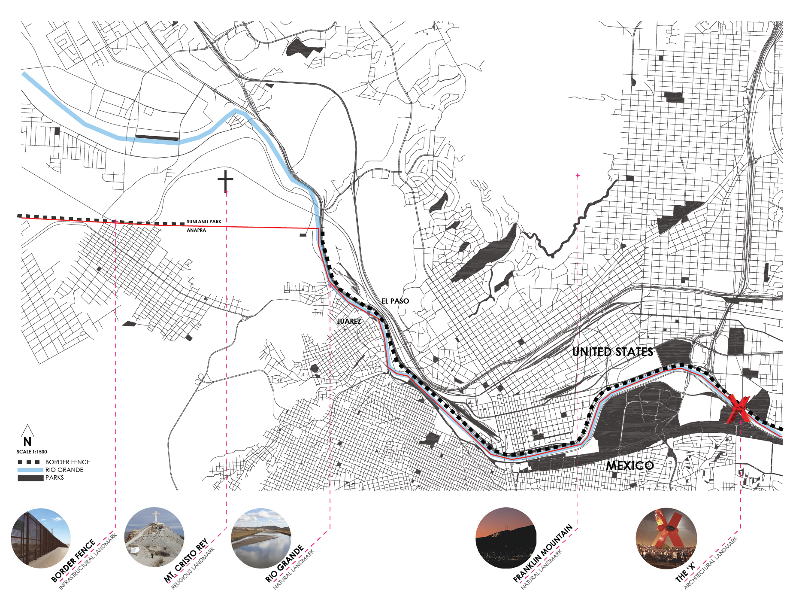
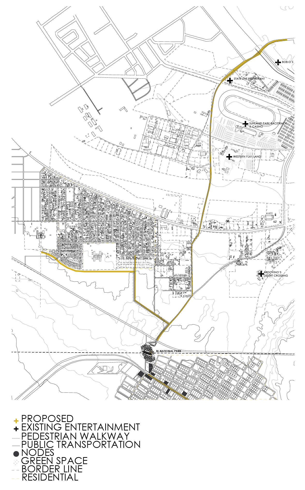
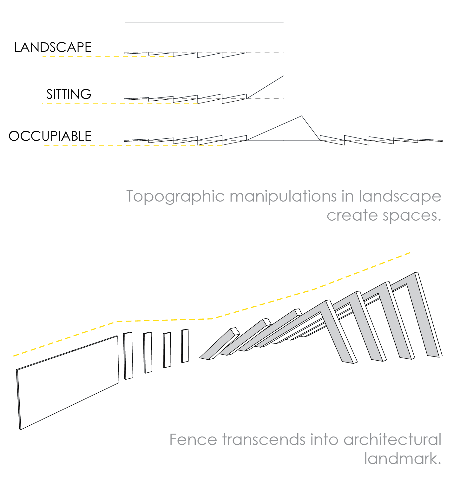
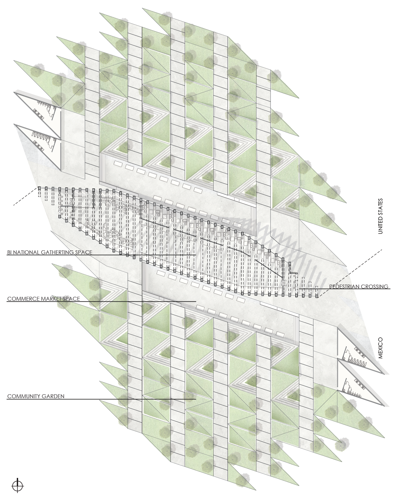
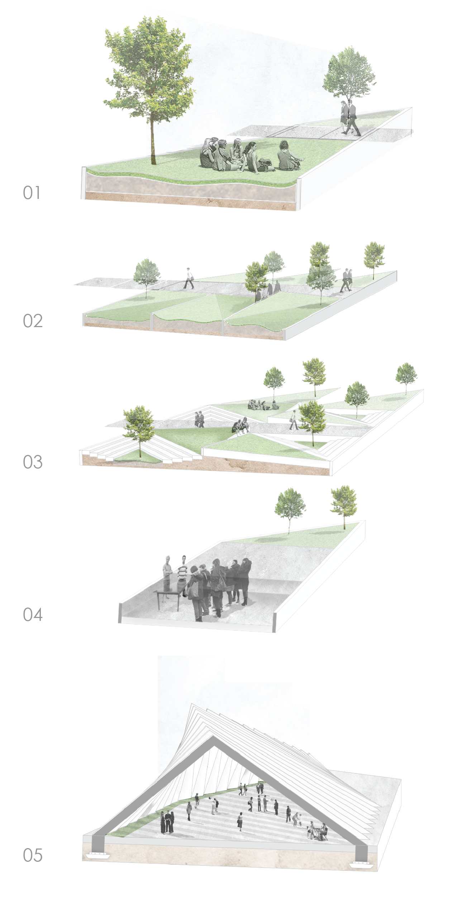

interrupting the border
architecture, urbanism
The Union is a landmark that interrupts the American/Mexican border. The Monument is the heart of a bi-national park, serving a public park as a backyard for two edges of nations and a pedestrian crossing between Sunland Park and Anapra. The structure supports and triggers the use of public space at its base. Various scalar variations of topographic manipulations become host to green, gathering spaces and bi-national farmer's market which construct the path towards the landmark. In this space families that have been separated are given the opportunity to reunite and invites both communities in creating a unique opportunity to come together as one and share their cultures. The Union provides exhibition spaces of art produced on site as well as an exterior garden where both nations are educated and given the opportunity to construct the landscape of this park.
exhibit
+ Emerging Districts: Imagining the Tri-State & Bi-National Entertainment District. Borderplex Alliance. El Paso, TX May 2016.
AutoCAD, Rhino, Photoshop, Illustrator
2015





